Tutorial 11 of 17
Spillway from your own geometry
Import an STL file of an ogee spillway and build the whole free-surface case around it from an empty project.
The earlier tutorials started from examples. This one starts from nothing but a geometry file, the way your own projects will: you import the shape of a structure, build a channel around it, and set up the water, the boundaries and the monitors yourself.
The structure is an ogee spillway: a crest shaped like the underside of the water jet that would spring from a sharp edge, so that the water stays attached all the way down. It stands 0.5 m above the bed of a channel 0.5 m wide, and it has to pass 0.04 m³/s (40 litres a second).
Download the geometry first: spillway.stl. It is drawn in metres.
What you will learn
- import an STL (or STEP) file and choose its length unit
- build a channel around a structure and name its faces
- set up a free-surface case from an empty project: water, inflow, outflow, open top
- add a gauge and a discharge monitor, and compare the head with the spillway formula
Computer time: about a minute for the mesh and several minutes for the run, on four cores.
1Start an empty project
Start EasyFOAM and create a new, empty project.
- Click New project.

2Name it
- Type the name
spillway. - Leave Start from on Empty project.
- Click Create project.

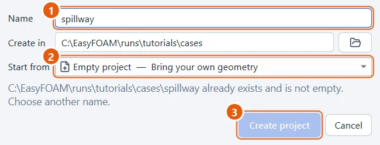
3Import the geometry
In the Geometry step, import the file you downloaded. EasyFOAM asks which length unit the file is drawn in: STL files do not say, and a part drawn in millimetres would otherwise arrive a thousand times too large. This one is in metres.
The file is copied into the project, so the project stays complete if you move it.
- Click Import, choose
spillway.stl, and answer metres. - The shape appears in the list and in the 3D view.
- Click Fit to bring it into view.

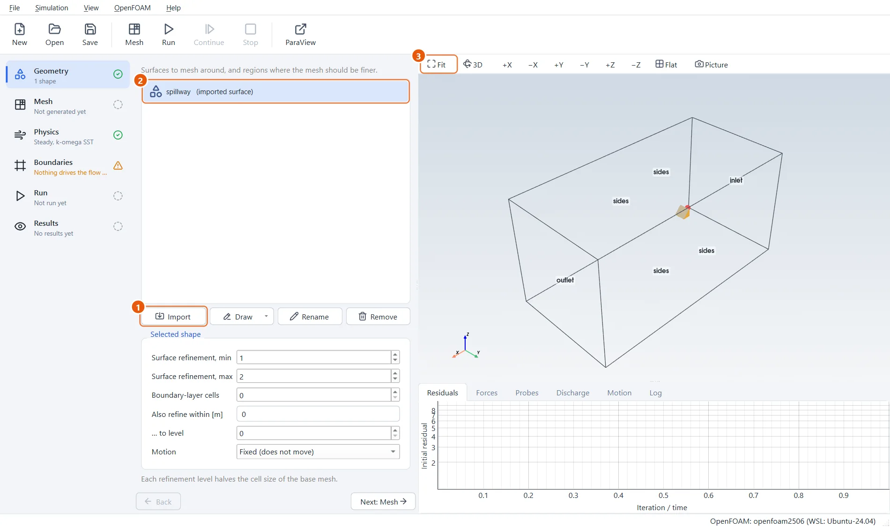
4How fine the mesh is on the spillway
The curved crest is where the flow is decided, so ask for finer cells there. Level 1 halves the base cell size; level 2, used where the surface curves, halves it again.
- Surface refinement, min:
1. - Surface refinement, max:
2.

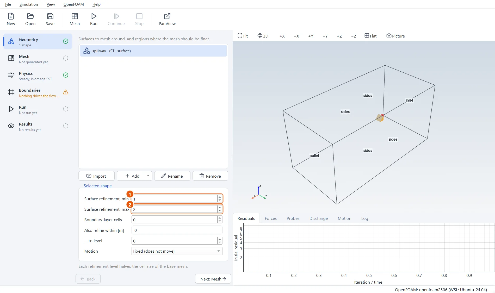
5Build the channel
The base mesh is the channel. Make it 4 m long, 0.5 m wide and 1 m high: room for a reservoir upstream of the spillway, a stretch of bed downstream, and air above the water.
The spillway was drawn wider than the channel and deeper than the bed on purpose. Where the channel cuts through it, the mesh ends cleanly on the spillway's surface.
- Corner (min):
0,0,0. - Corner (max):
4,0.5,1. - Cells:
80,10,20, which makes 5 cm cubes. - Click Fit.

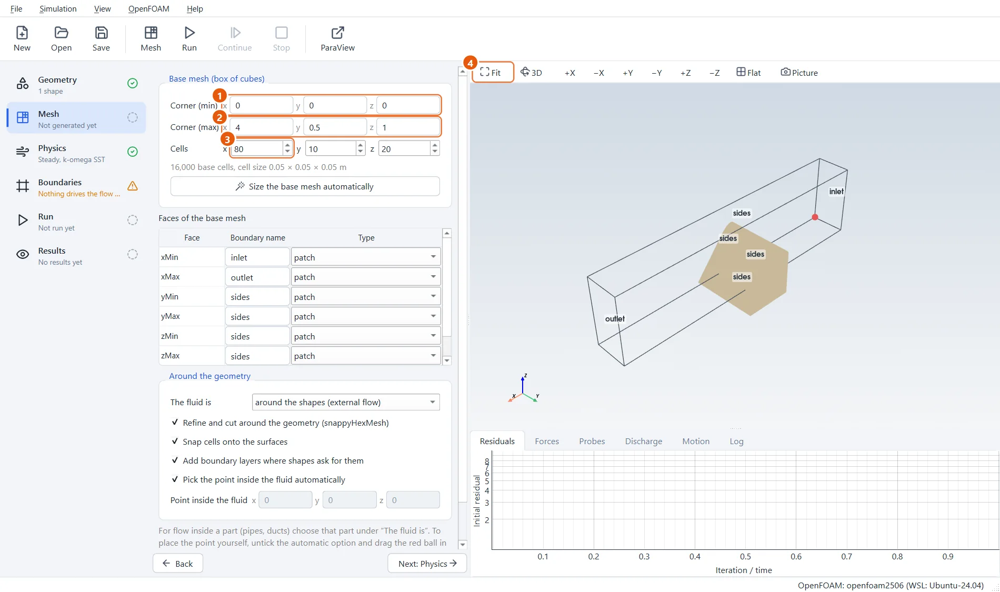
6Name the faces
The two ends are already called inlet and outlet, and the long sides sides. Two faces need changing: the bottom is the solid bed of the channel, and the top is open to the air. Names matter: EasyFOAM recognises atmosphere and sets that boundary up for you.
- zMin: name
bed, typewall. - zMax: name
atmosphere, typepatch. - Click Mesh in the toolbar (or press F5).

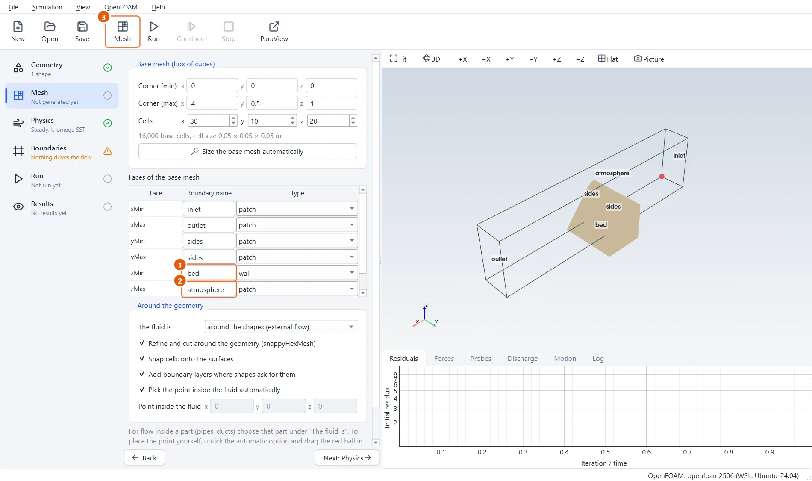
7The mesh
After about a minute the mesh is ready. The spillway is cut out of the channel, and the cells on its surface are visibly smaller than the rest.
- The number of cells and a green tick.
- Turn the view to look at the crest.

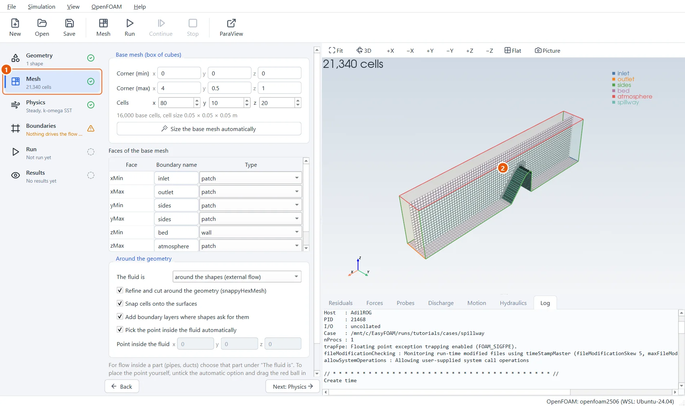
8Water, air and turbulence
An empty project starts as a plain air-flow case. Three choices turn it into a hydraulic one.
- Flow type: Free surface: water and air.
- Turbulence: k-omega SST.
- Fluid: Water.

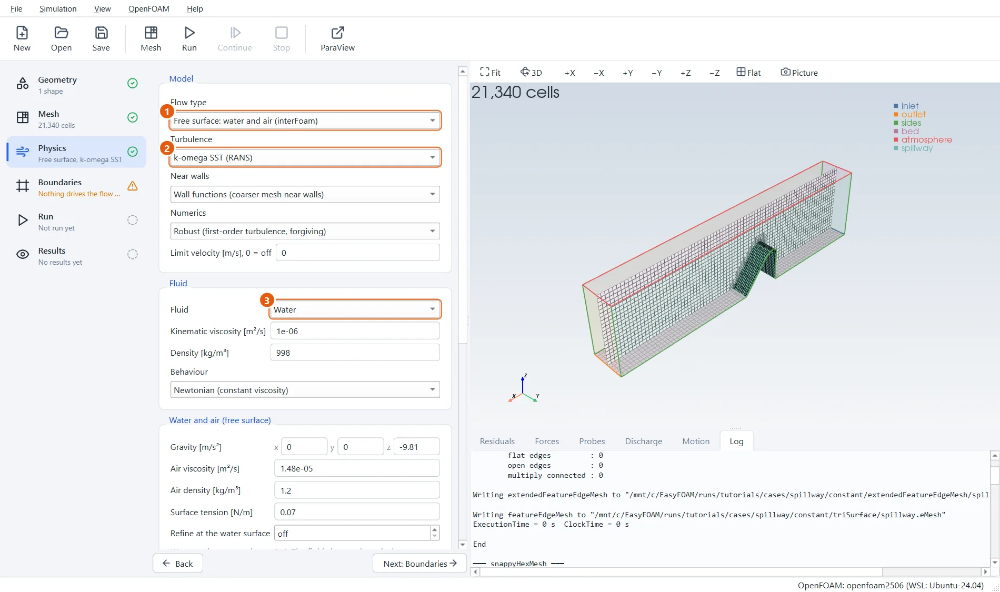
9Fill the reservoir
Scroll down to Water and air. Start with the reservoir full to the crest, so that the run does not have to fill it first. Click Add box and type the corners into the new row: from the inlet to the upstream face of the spillway, 0.5 m deep.
- Click Add box.
- Type
0,0,0and1.5,0.5,0.5into the row.

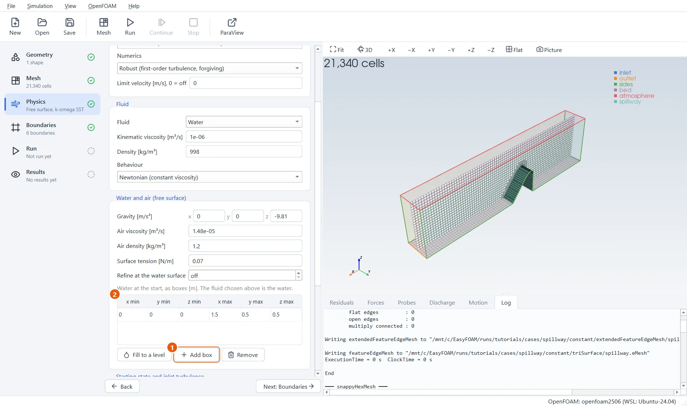
10The inflow
The inlet brings in the discharge and lets the water find its own level.
- Select inlet.
- Condition: Inlet by flow rate.
- Flow rate:
0.04m³/s.

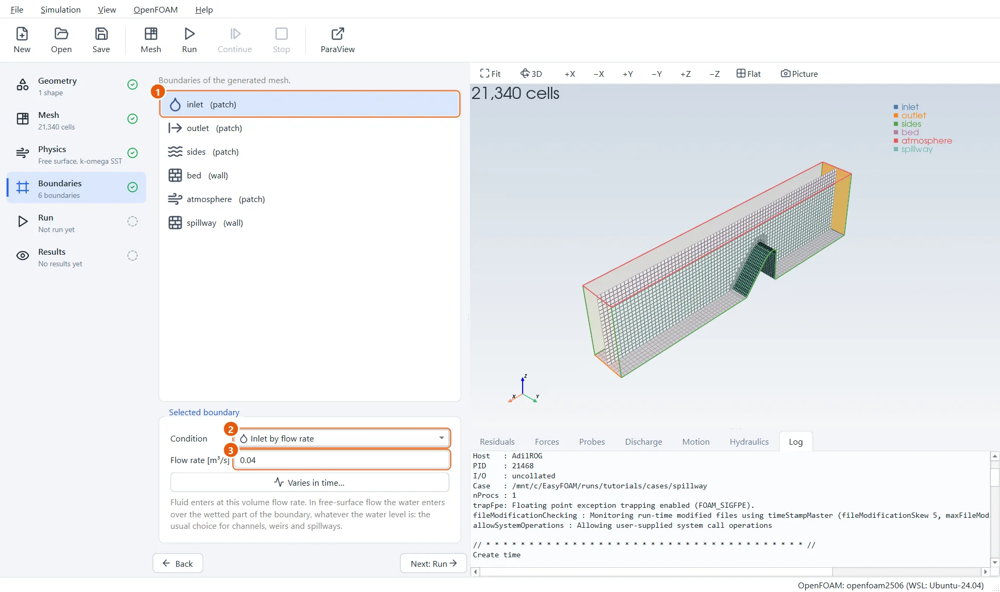
11The outflow
Downstream the water arrives fast and shallow and simply leaves. The other boundaries are already right: atmosphere is open to the air, sides are frictionless, bed and spillway are walls.
- Select outlet.
- Condition: Free outflow.

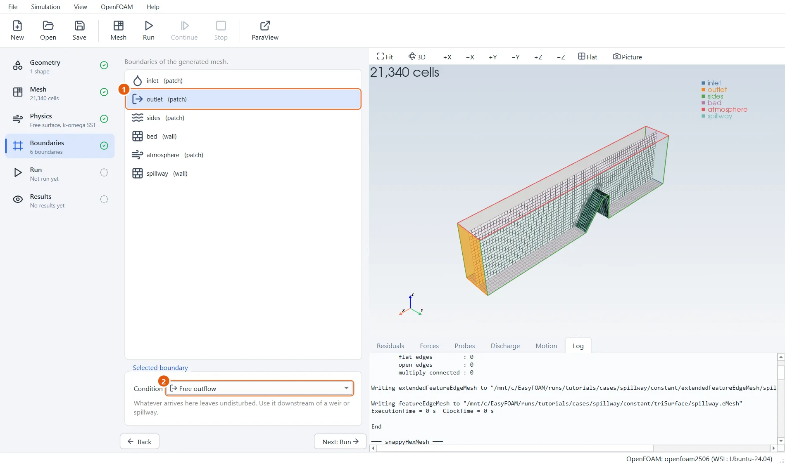
12A gauge and a discharge monitor
In the Run step, scroll down. Add one probe in the middle of the reservoir: in a free-surface case it works as a gauge and records the water depth. Then ask for the discharge through the outlet.
- Click Add point.
- Type
0.7,0.25,0.3. - Under Discharge, Through:
outlet.

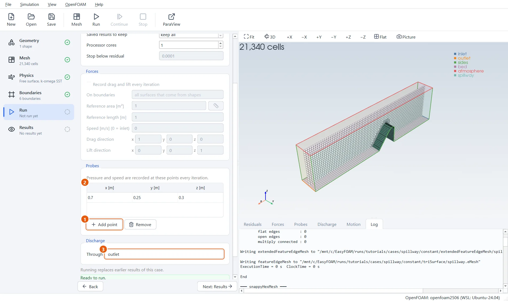
13Run for twelve seconds
Scroll back up to the run control. An empty project still carries the settings of a steady run, so give the time step a small starting value; EasyFOAM adjusts it from there to keep the Courant number below the limit.
- End time:
12s. - Time step:
0.001s. - Keep the Courant number below
0.7. - Save every:
0.5s. - Processor cores:
4, or as many as you have. - Click Run in the toolbar (or press F6).

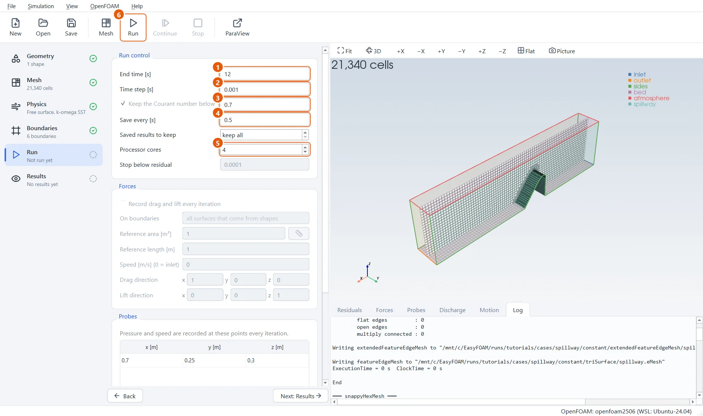
14Wait for the outflow to match the inflow
On the Discharge tab the outflow starts at nothing, jumps when the first water arrives, and settles at the 0.04 m³/s that come in. From then on the flow is steady.
- Open the Discharge tab.
- The latest value.

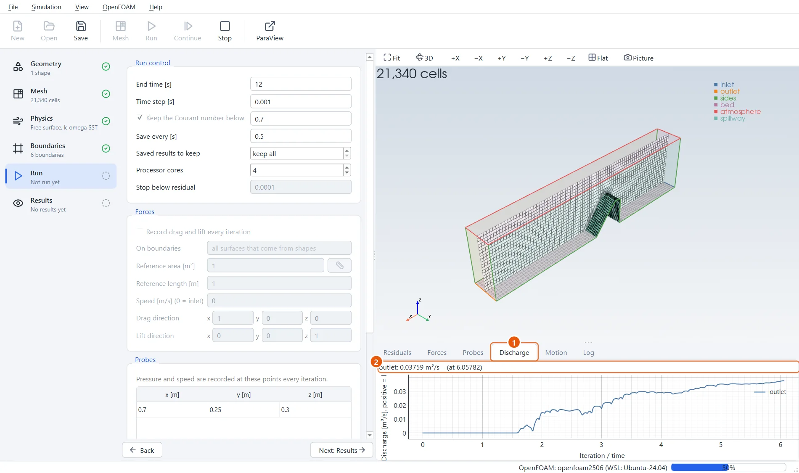
15The head on the crest
When the run has finished, the Probes tab shows the depth in the reservoir levelling off. Take the crest height, 0.5 m, away from it to get the head on the spillway.
Now the check. An ogee crest working near its design head passes about q = 2.18 × H^1.5 per metre of width. Here q = 0.04 / 0.5 = 0.08 m²/s, so H = (0.08 / 2.18)^(2/3) = 0.110 m, and the gauge should read about 0.61 m.
It reads 0.609 m: a head of 0.109 m, within a millimetre of the formula. Do not expect such luck every time on a mesh this coarse; the point is that the simulation and a century of spillway experiments agree on the size of the answer.
- Open the Probes tab and read the depth at the end of the run.

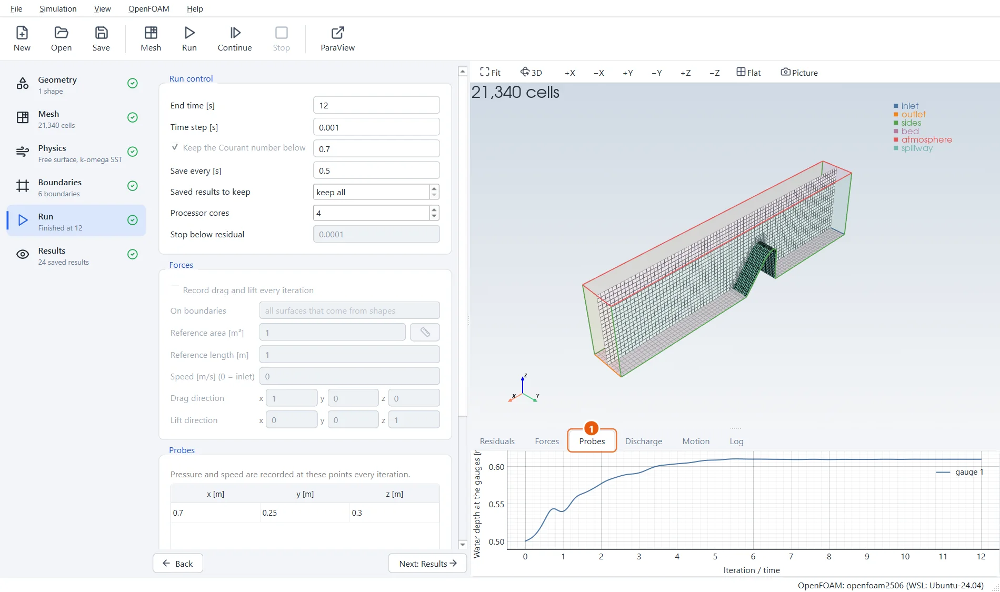
16The water over the spillway
The Results step shows the water surface coloured by speed. The water glides over the crest, stays on the face all the way down and runs off along the bed as a fast, thin sheet.
- Show: Water surface.
- Step through Saved time to watch the flow establish itself.

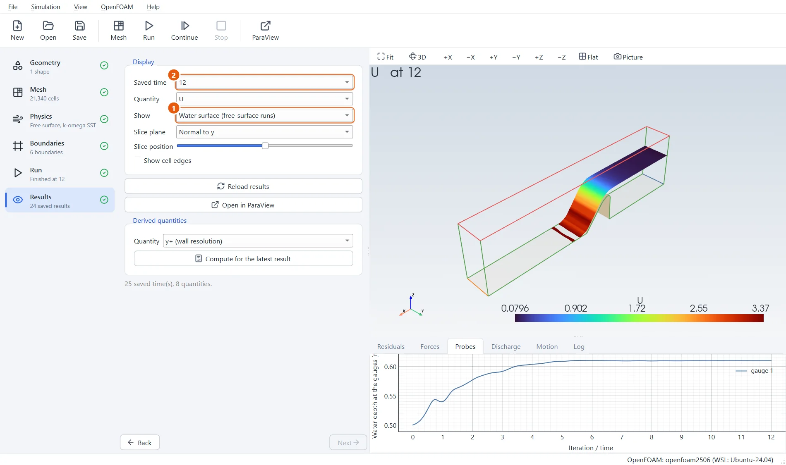
17Try it yourself
- Choose the quantity
cavitationIndexin the Results step: on a spillway face it shows where low pressure could damage the concrete. - Raise the discharge to
0.08. Above the design head the pressure on the crest falls further. - Halve the cell size and see how much the head changes. Until it stops changing, the mesh is part of the answer.
- Use your own structure: any closed STL or STEP file works in place of this one.